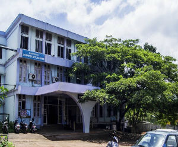

Cochin University of Science and Technology

The establishment of the erstwhile University of Cochin in 1971 was a commitment from the Government of Kerala towards the new scientific policy resolution adopted by the Central Government on 4th March 1958. The birth of the new University was with the specific purpose of “development of higher education with particular emphasis on post-graduate studies and research in applied science, technology, industry and commerce”. The University of Cochin was later reorganized as Cochin University of Science and Technology (CUSAT) in February 1986.
The University’s basic philosophy and goals find eloquent expression in its Coat of Arms emblazoning the motto ‘Tejaswinavadhitamastu’ which in essence means ‘may the wisdom accrued deify us both-the teacher and the taught-and percolate to the universe in its totality’. The University has strengthened its contacts and collaborative tie-ups with international universities and institutions and is in the path of growth as a global centre for generation of new knowledge in frontier areas of learning. CUSAT has entered into academic collaborations and exchange programmes with many notable institutions across the USA, Europe, Russia, Japan, France, Korea etc.Department of Computer Applications

The Department of Computer Applications of Cochin University of Science and Technology was established in 1992 to facilitate research and human resource development in the area of Computer Science and Information Technology. The research activities of the department include a wide variety of areas such as Machine Intelligence, Artificial Intelligence, Fuzzy Logic, Neural Network, Data Mining, Image Processing, Indian Language Computing, Cryptography and Coding Theory, Network Security, Quantum Computing, Simulation, Pattern Recognition, Assistive Software Technologies, Cyber Intelligence, Graph Algorithms and Computational Chemistry.
The Master of Computer Applications (MCA) programme was started (1994) with a model curriculum prepared jointly by ISTE and the Department of Electronics, Government of India with minor modifications. The Syllabus is updated periodically based on the current trends and requirements of the industry. The Department has proud alumni, most of them being placed in much reputed international firms like IBM, WIPRO, INFOSYS, TCS, CTS etc.Cyber Intelligence Research Laboratory
Cyber Intelligence research has not grown at par with cybercrime scenario. We have a dearth of trained personnel in this area. Considering the current scenario, the Department of Computer Applications of Cochin University of Science and Technology has ventured upon Cyber Intelligence Research laboratory with the financial aid of Govt. of Kerala. The laboratory is equipped with state of the art facility to support Cyber Intelligence research.